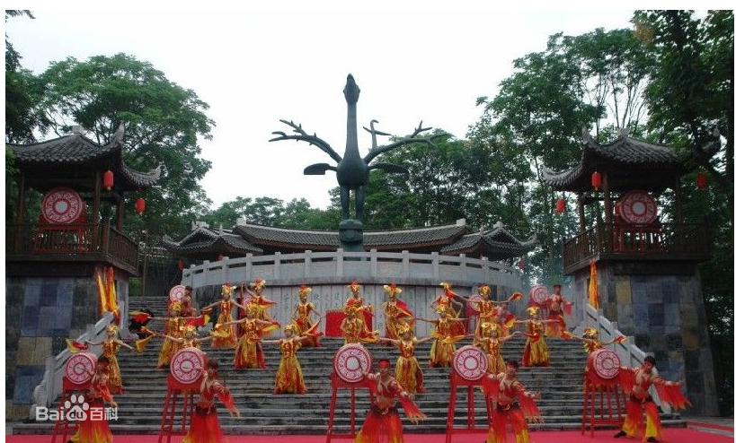

凤凰-南华山神凤文化景区
凤凰景点
南华山神凤文化景区，中国首个凤凰文化全体验景区。整体以中华7800年凤凰文化为主题，匠心独创 亭、台、殿、阁、廊、柱、桥、楼等蕴藉凤凰文化元素之古建筑及主题场景，精炼凤凰神鸟的十八神性， 密集、形象、丰富地展现中华民族凤凰神凤文化景区，中国首个凤凰文化全体验景区。
景区涵盖凤竹林海 、有凤来仪、凤缘亭、引凤桥、百鸟朝凤、九九神阶、神凤殿、凤凰座、十八神性图腾柱、凤凰纪、醴泉台、五德门、凤凰物语、放生台、乘风栈道、鸟语林等十多处主题景点。景区核心圣地神凤殿，据《山海经》典载之预言，尊奉中华古凤神祇，供世人观瞻敬拜。并再现“见则天 下安宁”凤图腾主题朝拜仪式，以弘其和美祥瑞，见者安宁。凤凰台上凤凰游，此台为俯览凤凰古城胜景 至妙之处。
玉氏山房、沱江跳岩、虹桥、万名塔等特色景点尽敛眼底。萧史弄玉，神仙眷侣，吹箫引凤，世所乐道，故此索桥名曰引凤桥。凤凰神鸟非梧桐不栖，桥侧挺立数十株梧桐，寓意栽得梧桐引凤来。桥全长80余米，索桥之下，修竹篁篁，幽深可观。索桥之上，可汲取天地灵气，畅饮山林清息。古树林列，人游画中，云缭雾绕，宛若遁入仙境。